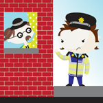
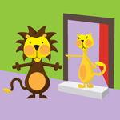
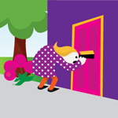

Lesson Fifty One – I think he's not...
In this lesson you'll revise the words for coming, going off, staying, listening and working, and learn the word for looking. You'll use the verb to think from the last lesson and put everything together into sentences to make phrases like I think he's not coming and I think he's not listening.
ROLEPLAY
At the end of the lesson you'll listen to a roleplay between Pádraig and Nóra. Pádraig is asking Nóra about his friend Peadar who he hasn't seen for a long time. Does Nóra know where he has been and what has happened to him?
Lesson Fifty Two – Detective work
In this lesson you'll learn verbs which will help with detective work! You'll learn how to say I know, I suppose, I don't suppose and perhaps.
ROLEPLAY
At the end of the lesson you'll hear a roleplay between Cáit and Nóra. Cáit meets Nóra on the street and they are talking about their friend Bríd. Why wasn't she at the dance last night, and where might she have gone?
Lesson Fifty Three – More food...mmmm
In this lesson you'll learn new words to describe different food and drinks, such as cake, soup, coffee and cocoa.
You'll also revise the verb to make, saying he made and he didn't make as well as asking did he make? and didn't he make?
ROLEPLAY
At the end of the lesson you'll listen to a roleplay between Pádraig and Séamas. Pádraig and Séamas are outside talking about their gardens again. One of them has been working very hard, and the other has not. Who has been busy and what excuse does the other one have for not doing anything at all?

Lesson Fifty Four – Without any...
In this lesson you'll learn the word for without. You'll see a series of characters returning home from shopping having forgotten something essential. You'll learn how to say without any fish, without any meat and without any eggs.
You'll also revise the verb to come in both present and past tenses. You'll be able to say he is coming and he was coming as well as asking did he come? and didn't he come?
ROLEPLAY
At the end of the lesson you'll hear a roleplay between Pádraig and Nóra. Pádraig has just come home from shopping and Nóra is keen to know where his purchases are. What could have happened to them?
Lesson Fifty Five – Different kinds of money
In this lesson you'll learn words to describe different forms of money, including the pay, the rent, the cheque and the bill.
You'll also revise the verb to give in both present and past tenses. You'll be able to say he is giving it and he was giving it, as well as asking did he give? and didn't he give?
ROLEPLAY
At the end of the lesson you'll listen to a roleplay between Pádraig and Nóra. Pádraig needs to give Nóra some money for the housekeeping this week, and he seems rather reluctant to part with it. Is Pádraig telling the truth and why is Nóra so hot under the collar?

Lesson Fifty Six – To be or not to be...
In this lesson you'll go over the words for today, yesterday, now and again.
You'll also revise the verb to be so you can talk in the present and in the past saying he is and he was, as well as asking is he? and was he?
ROLEPLAY
At the end of the lesson you'll hear a roleplay between Nóra and Cáit. Nóra meets Cáit in the street and enquires after one of her relatives. Who is she asking about and what is wrong with them?
Lesson Fifty Seven - From
In this lesson you'll learn the word for from and how to ask who you got things from, whether it's from the doctor, from the nurse or from the farmer. You'll also learn new words like tailor and shoemaker.
ROLEPLAY
At the end of the lesson you'll listen to a roleplay between Nóra and Máire. Nóra needs Máire to go to the shop to get some messages, but she has forgotten something! What has she forgotten and who might be able to help?
Lesson Fifty Eight – Didn't you see...?
In this lesson you'll revise the words for me, you, him, her, us and them. You'll also revise words to describe directions such as here, there, inside, outside, above and below.
You'll also revise the verb to see so you can say I see, I didn't see and I saw as well as how to ask did you see? and didn't you see?
ROLEPLAY
At the end of the lesson you'll hear a roleplay between Máire and Nóra. Máire has been having great fun climbing on the tree in the garden and she tells her mother about it. Does Nóra approve, and what does she warn her about?
Lesson Fifty Nine – Putting up with the weather
In this lesson you'll learn words to describe the weather in the present and past tense. You'll be able to say it is raining as well as it rained.
You'll also learn the verb to put so you can say he is putting and he was putting as well as how to ask did he put? and didn't he put?
ROLEPLAY
At the end of the lesson you'll listen to a roleplay between Nóra and Máire. Nóra has just finished the washing and wants to hang it out to dry, but Máire thinks she should wait. What do they talk about and why can't Nóra hang out the clothes?
Lesson Sixty – Directions of the compass
In this lesson you'll learn words to describe compass directions such as north, south, east and west. You'll revise the verb to go off so you can ask did he go off? and didn't he go off?
ROLEPLAY
At the end of the lesson you'll hear a roleplay between Nóra and Pádraig. Nóra thinks that someone in the area may not be well. Why does she think this, and does Pádraig know who it may be?
Go back to main lesson list >>